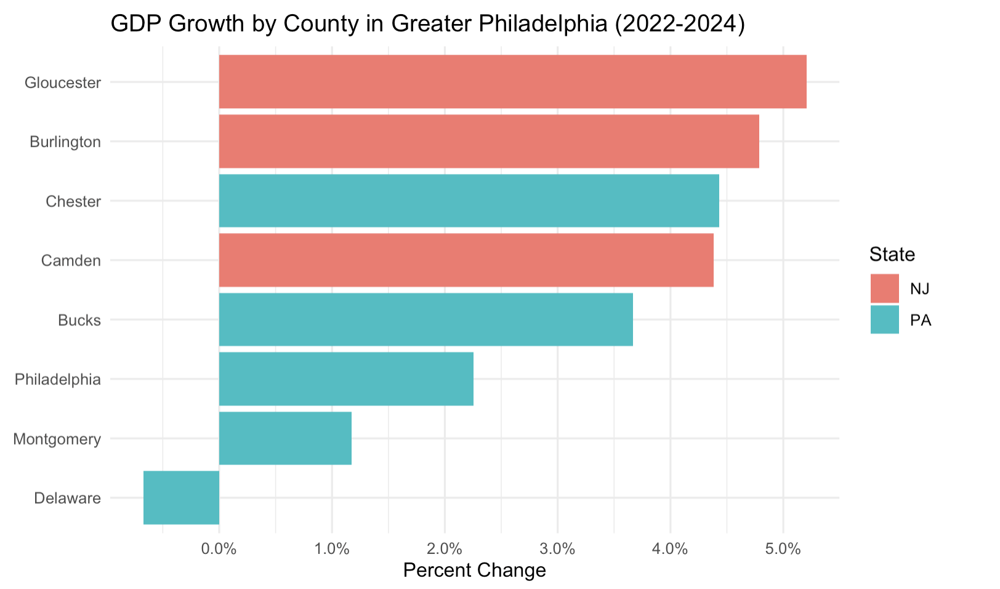
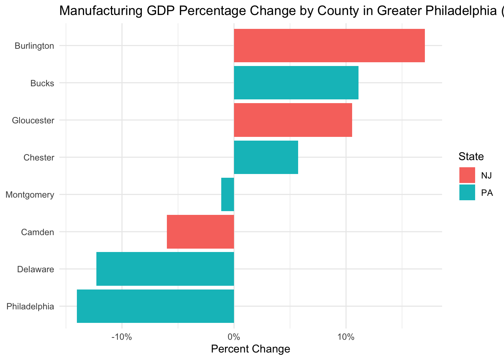

Rsw comment: Yaelle - You’ve done a tremendous amount of work and carefully followed my guidance from yesterday. This project is in good shape at this point. It is also quite long so we want to find ways to cut it back and emphasize the main findings. I put a few comments under rsw comment below.
Pitch Memo
In two sentences, what is this story about?
rsw comment - great focus on an important trend. really captures your attention
Delaware County is the only county in the greater Philadelphia region whose GDP shrank between 2022 and 2024. Manufacturing industry in spelling \ Dalaware County lost more than $428 million in output, showing a 12% decline. Meanwhile, neighboring counties like Bucks and Burlington saw their manufacturing GDP grow by double digits over the same period.
In one sentence, why tell this story NOW?
The Bureau of Economic Analysis (BEA) released its 2024 county-level GDP data on February 5, 2026, offering the most current picture of how the greater Philadelphia region’s economy has shifted.
Who is your target audience?
Residents and workers in the greater Philadelphia area
Three people you can interview for this story
Working on it…
Potential impact
A sustained decline in Delaware County’s manufacturing output likely means fewer stable jobs for working-class residents, reduced tax revenue for local services, and a widening gap between the county and its neighbors.
What are three things that surprised or interested you about this story?
rsw comment great observation. let’s show this in a chart below.
Delaware County’s GDP shrank even as personal income grew by 10%. Residents may be earning more by commuting to jobs elsewhere while local economic activity continues to decline. How to explore this with data?
Philadelphia’s manufacturing sector actually fell harder than Delaware County’s (14% vs. 12%), but Philadelphia’s overall GDP remained positive. Delaware County’s economy is far more dependent on manufacturing and has fewer industries to fill the gap.
Manufacturing’s share of the economy is shrinking across nearly every county in greater Philadelphia.
rsw comment: how does the decline in manufacturing compare to national trends? it will be on the BEA GDP press release
Context: Summarize any previous coverage.
WHYY reported in 2023 that the greater Philadelphia region experienced nine consecutive months of manufacturing slowdown, with factory closures and layoffs in Philadelphia and King of Prussia. But previous coverage treated the region as a whole. No reporting has specifically asked why Delaware County, alone among its neighbors, failed to compensate for manufacturing losses with growth in other sectors
Photos, video, graphics - How will you make this story visual?
rsw comments: these charts aren’t displaying properly

Manufacturing GDP Change by County in Greater Philadelphia
Manufacturing GDP Change by County in Greater Philadelphia
Percentage change
What other information do you need to gather?
Employment data for Delaware County to understand where workers went as manufacturing shrank, and why personal income continued to rise despite the GDP decline.
Population change data would help confirm whether residents are leaving the county.
Any specific factory closures during this period?
A deeper breakdown of manufacturing sub-sectors would identify which specific industries drove the decline.
Estimated delivery
Code Memo
Data limitations
This data series lags significantly. We are working with 2024 data, the most recent available. But it is still the best you can get and you can’t beat the price.
Setup
Regional GDP by County
Data limitations
This data series lags significantly. We are working with 2024 data, the most recent available. But it is still the best you can get and you can’t beat the price.
Retrieve GDP Data
GDP CAGDP1 County gross domestic product (GDP) summary Real Gross Domestic Product (GDP) (Thousands of chained 2017 dollars) Source Page https://www.bea.gov/news/2026/gross-domestic-product-county-and-personal-income-county-2024
And more detail: https://www.bea.gov/data/gdp/gdp-by-county
Warning: One or more parsing issues, call `problems()` on your data frame for details,
e.g.:
dat <- vroom(...)
problems(dat)
Rows: 3138 Columns: 5
── Column specification ────────────────────────────────────────────────────────
Delimiter: ","
chr (5): GeoFIPS, GeoName, 2022, 2023, 2024
ℹ Use `spec()` to retrieve the full column specification for this data.
ℹ Specify the column types or set `show_col_types = FALSE` to quiet this message.
Warning: There were 3 warnings in `mutate()`.
The first warning was:
ℹ In argument: `across(3:5, as.numeric)`.
Caused by warning:
! NAs introduced by coercion
ℹ Run `dplyr::last_dplyr_warnings()` to see the 2 remaining warnings.
# A tibble: 8 × 7
county state x2022 x2024 pct_24_v_22 `rank(x2022)` `rank(x2024)`
<chr> <chr> <dbl> <dbl> <dbl> <dbl> <dbl>
1 Gloucester NJ 13994075 14722428 0.0520 1 1
2 Burlington NJ 30915417 32395824 0.0479 3 3
3 Chester PA 47391773 49491894 0.0443 6 6
4 Camden NJ 26094892 27237865 0.0438 2 2
5 Bucks PA 36888334 38241897 0.0367 5 5
6 Philadelphia PA 106999472 109412657 0.0226 8 8
7 Montgomery PA 88989489 90035254 0.0118 7 7
8 Delaware PA 34288808 34058368 -0.00672 4 4
Chart: GDP Growth by County
rsw comment: you’ll want this chart at the top of your page
# AI assistedggplot(philly_gdp, aes(x =reorder(county, pct_24_v_22), y = pct_24_v_22, fill = state)) +geom_col() +coord_flip() +scale_y_continuous(labels = scales::percent) +labs(title ="GDP Growth by County in Greater Philadelphia (2022-2024)",x =NULL,y ="Percent Change",fill ="State" ) +theme_minimal()
Finding: Delaware County was the only county in the region to see its GDP shrink between 2022 and 2024.
Part 2: Personal Income by County
Load and Clean Data
# [Personal income (Thousands of dollars)](https://www.bea.gov/news/2026/gross-domestic-product-county-and-personal-income-county-2024)# BEA CAINC1 - County Personal Income Summary# CAINC1 County personal income summary: personal income, population, per capita personal incomecainc1 <-read_csv("../bea_gdp_2024_personal_income_county_CAINC1.csv", skip=3) |>clean_names() |>mutate(across(x2022:x2024, as.numeric)) |>mutate(pct_23_v_22 =round((x2023 - x2022) / x2022, 4),pct_24_v_23 =round((x2024 - x2023) / x2023, 4),pct_24_v_22 =round((x2024 - x2022) / x2022, 4) )
Warning: One or more parsing issues, call `problems()` on your data frame for details,
e.g.:
dat <- vroom(...)
problems(dat)
Rows: 3167 Columns: 5
── Column specification ────────────────────────────────────────────────────────
Delimiter: ","
chr (5): GeoFIPS, GeoName, 2022, 2023, 2024
ℹ Use `spec()` to retrieve the full column specification for this data.
ℹ Specify the column types or set `show_col_types = FALSE` to quiet this message.
Warning: There were 3 warnings in `mutate()`.
The first warning was:
ℹ In argument: `across(x2022:x2024, as.numeric)`.
Caused by warning:
! NAs introduced by coercion
ℹ Run `dplyr::last_dplyr_warnings()` to see the 2 remaining warnings.
# A tibble: 8 × 5
county state x2022 x2024 pct_24_v_22
<chr> <chr> <dbl> <dbl> <dbl>
1 Burlington NJ 33094170 37195463 0.124
2 Chester PA 55399329 62177057 0.122
3 Montgomery PA 81829035 91769650 0.122
4 Bucks PA 56456435 62844148 0.113
5 Camden NJ 32535048 36195828 0.112
6 Gloucester NJ 19213771 21323961 0.110
7 Delaware PA 45267843 49769749 0.0995
8 Philadelphia PA 91887036 96312500 0.0482
Chart: Personal Income Growth by County
# AI assistedggplot(philly_income, aes(x =reorder(county, pct_24_v_22), y = pct_24_v_22, fill = state)) +geom_col() +coord_flip() +scale_y_continuous(labels = scales::percent) +labs(title ="Personal Income Growth by County in Greater Philadelphia (2022-2024)",x =NULL,y ="Percent Change",fill ="State" ) +theme_minimal()
Finding: Personal income in Delaware County grew 10.98% between 2022 and 2024, yet its GDP was the only one in the region to shrink. Residents may be earning more by working elsewhere while local industries are losing ground.
Part 3: GDP by Industry
Load and Clean Data
BEA CAGDP2 — GDP by Industry (Current dollars)
# Merge Pennsylvania and New Jersey industry filesgdp_industry <-bind_rows(read_csv("../CAGDP2_GPD_PA_Industry.csv", skip =3) |>clean_names(),read_csv("../CAGDP2_GPD_NJ_Industry.csv", skip =3) |>clean_names())
Warning: One or more parsing issues, call `problems()` on your data frame for details,
e.g.:
dat <- vroom(...)
problems(dat)
Rows: 2386 Columns: 7
── Column specification ────────────────────────────────────────────────────────
Delimiter: ","
chr (6): GeoFIPS, GeoName, Description, 2022, 2023, 2024
dbl (1): LineCode
ℹ Use `spec()` to retrieve the full column specification for this data.
ℹ Specify the column types or set `show_col_types = FALSE` to quiet this message.
Warning: One or more parsing issues, call `problems()` on your data frame for details,
e.g.:
dat <- vroom(...)
problems(dat)
Rows: 776 Columns: 7
── Column specification ────────────────────────────────────────────────────────
Delimiter: ","
chr (6): GeoFIPS, GeoName, Description, 2022, 2023, 2024
dbl (1): LineCode
ℹ Use `spec()` to retrieve the full column specification for this data.
ℹ Specify the column types or set `show_col_types = FALSE` to quiet this message.
Filter Private Industry Sub-sectors for Greater Philadelphia
# Using Private industries sub-categories only (excluding aggregates to avoid double counting)gdp_industry <- gdp_industry |>mutate(x2022 =as.numeric(x2022),x2023 =as.numeric(x2023),x2024 =as.numeric(x2024))
Warning: There were 3 warnings in `mutate()`.
The first warning was:
ℹ In argument: `x2022 = as.numeric(x2022)`.
Caused by warning:
! NAs introduced by coercion
ℹ Run `dplyr::last_dplyr_warnings()` to see the 2 remaining warnings.
# check what industry includedgdp_industry|>distinct(description) |>print(n =36)
# A tibble: 36 × 1
description
<chr>
1 All industry total
2 Private industries
3 Agriculture, forestry, fishing and hunting
4 Mining, quarrying, and oil and gas extraction
5 Utilities
6 Construction
7 Manufacturing
8 Durable goods manufacturing
9 Nondurable goods manufacturing
10 Wholesale trade
11 Retail trade
12 Transportation and warehousing
13 Information
14 Finance, insurance, real estate, rental, and leasing
15 Finance and insurance
16 Real estate and rental and leasing
17 Professional and business services
18 Professional, scientific, and technical services
19 Management of companies and enterprises
20 Administrative and support and waste management and remediation services
21 Educational services, health care, and social assistance
22 Educational services
23 Health care and social assistance
24 Arts, entertainment, recreation, accommodation, and food services
25 Arts, entertainment, and recreation
26 Accommodation and food services
27 Other services (except government and government enterprises)
28 Government and government enterprises
29 Addenda:
30 Natural resources and mining
31 Trade
32 Transportation and utilities
33 Manufacturing and information
34 Private goods-producing industries 2
35 Private services-providing industries 3
36 <NA>
greater_philly_industry <- gdp_industry |>filter(str_detect(geo_name, "Philadelphia, PA|Montgomery, PA|Bucks, PA|Chester, PA|Delaware, PA|Gloucester, NJ|Camden, NJ|Burlington, NJ")) |>filter(description %in%c("Agriculture, forestry, fishing and hunting","Mining, quarrying, and oil and gas extraction","Utilities","Construction","Manufacturing","Wholesale trade","Retail trade","Transportation and warehousing","Information","Finance, insurance, real estate, rental, and leasing","Professional and business services","Educational services, health care, and social assistance","Arts, entertainment, recreation, accommodation, and food services","Other services (except government and government enterprises)" )) |>select(geo_name, description, x2022, x2024) |>mutate(pct_24_v_22 =round((x2024 - x2022) / x2022, 4)) |>mutate(x24_v_22 = x2024 - x2022) |>arrange(desc(x24_v_22))glimpse(greater_philly_industry)
Finding: Delaware County’s manufacturing sector ranks third on the list, which likely explains why it is the only county in the region with negative GDP growth. I decide to have a closer look at Delaware County’s industry breakdown.
Which Industries Are Shrinking in Delaware County
Focus on Delaware County to identify the main driver of GDP decline
# A tibble: 14 × 7
geo_name description x2022 x2024 pct_24_v_22 x24_v_22 abs_change
<chr> <chr> <dbl> <dbl> <dbl> <dbl> <dbl>
1 Delaware, PA Manufacturing 3.49e6 3.06e6 -0.123 -428787 -428787
2 Delaware, PA Transportation an… 2.45e6 2.40e6 -0.0184 -45002 -45002
3 Delaware, PA Information 1.89e6 1.86e6 -0.0155 -29394 -29394
4 Delaware, PA Mining, quarrying… 2.06e4 4.96e3 -0.759 -15660 -15660
5 Delaware, PA Agriculture, fore… 4.35e3 1.20e4 1.77 7690 7690
6 Delaware, PA Wholesale trade 1.50e6 1.54e6 0.0306 45824 45824
7 Delaware, PA Utilities 5.61e5 6.42e5 0.144 80743 80743
8 Delaware, PA Construction 1.82e6 1.91e6 0.0529 96130 96130
9 Delaware, PA Other services (e… 9.55e5 1.09e6 0.140 133672 133672
10 Delaware, PA Retail trade 2.57e6 2.88e6 0.123 314699 314699
11 Delaware, PA Arts, entertainme… 1.19e6 1.51e6 0.264 315840 315840
12 Delaware, PA Finance, insuranc… 9.88e6 1.04e7 0.054 533901 533901
13 Delaware, PA Educational servi… 5.08e6 5.76e6 0.134 678699 678699
14 Delaware, PA Professional and … 5.85e6 6.57e6 0.124 727266 727266
Finding: Manufacturing is the primary driver of Delaware County’s GDP decline, with output falling 12.3% and losing over $428 million between 2022 and 2024.
# A tibble: 8 × 8
county state x2022_All industry t…¹ x2022_Manufacturing x2024_All industry t…²
<chr> <chr> <dbl> <dbl> <dbl>
1 Montg… PA 101985467 15248985 110422372
2 Bucks PA 43581226 4870776 48826773
3 Glouc… NJ 17242493 1715514 19111129
4 Delaw… PA 39895570 3489174 42607881
5 Camden NJ 30564484 2289084 34619814
6 Burli… NJ 36147688 2583053 40867224
7 Chest… PA 53823173 3772843 60160228
8 Phila… PA 122078607 5559680 134988949
# ℹ abbreviated names: ¹`x2022_All industry total`, ²`x2024_All industry total`
# ℹ 3 more variables: x2024_Manufacturing <dbl>, manufacturing_share_22 <dbl>,
# manufacturing_share_24 <dbl>
Findings: Manufacturing’s share of GDP declined in nearly every county across greater Philadelphia between 2022 and 2024. Manufacturing in Delaware County is shrinking fastest.
Charts: Manufacturing GDP Change by County
#AI-assisterggplot(philly_manufacturing, aes(x =reorder(county, pct_24_v_22), y = pct_24_v_22, fill = state)) +geom_col() +coord_flip() +scale_y_continuous(labels = scales::percent) +labs(title ="Manufacturing GDP Percentage Change by County in Greater Philadelphia (2022-2024)",x =NULL,y ="Percent Change",fill ="State" ) +theme_minimal()

ggplot(philly_manufacturing, aes(x =reorder(county, abs_change), y =abs_change , fill = state)) +geom_col() +coord_flip() +scale_y_continuous(labels = scales::comma) +labs(title ="Manufacturing GDP Change by County in Greater Philadelphia (2022-2024)",subtitle ="In thousands of dollars",x =NULL,y ="Absolute Change",fill ="State" ) +theme_minimal()
Findings: Philadelphia had the largest manufacturing decline both in percentage terms and absolute value, but its overall GDP remained positive. Delaware County, by contrast, lost 12% of its manufacturing output and saw its overall GDP turn negative. Maybe its economy is more vulnerable and lacks other industries to fill the gap left by manufacturing’s decline.